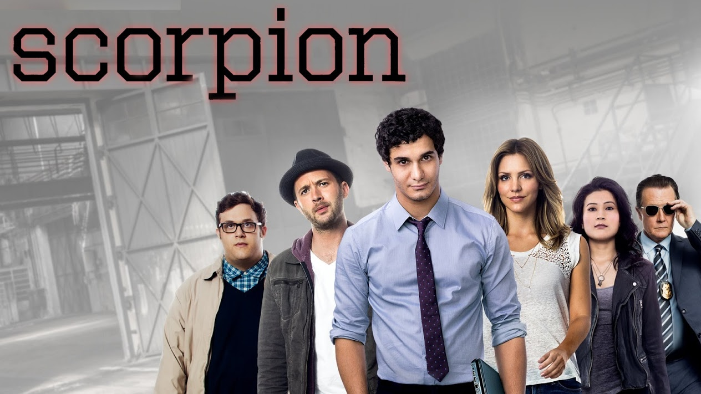
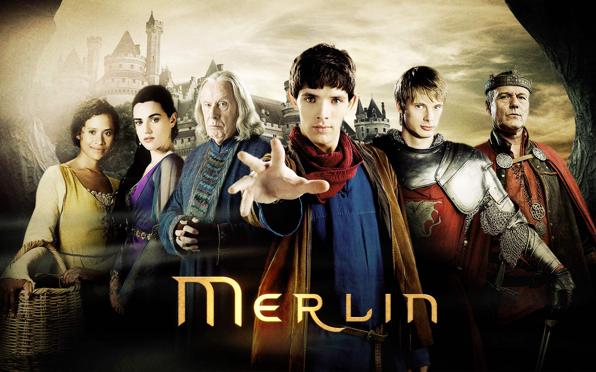

Scorpion*
Heirs
Harry Potter
Merlin

(recommended movies given with *)
Scorpion* |
Heirs |
Harry Potter |
Merlin |
|---|---|---|---|
|  | |
 | |
|
|||
"Scorpion" is an American action drama television series loosely based on the life of computer expert Walter O'Brien. In the series, O'Brien and his friends help each other to solve complex global problems and save lives. The series premiered on September 22, 2014 and airs in the United States on CBS.On October 27, 2014, CBS placed a full season episode order for the first season. In March 2017, CBS renewed the series for a fourth season, which premiered on September 25, 2017. |
"The Heirs" also known as The Inheritors, is a South Korean television series starring Lee Min-ho, Park Shin-hye and Kim Woo-bin. Written by Kim Eun-sook, the trendy drama is set in a high school populated by the privileged and uber-rich. It aired on SBS from October 9 to December 12, 2013 .This was the first Korean drama co-produced by American digital distribution platform DramaFever and Korean production company Hwa and Dam Pictures.The series was a major hit in South Korea and received immense popularity across Asia. |
"Harry Potter" is a series of fantasy novels written by British author J. K. Rowling.Harry Potter, and his friends Hermione Granger and Ron Weasley, all of whom are students at Hogwarts School of Witchcraft and Wizardry. The main story arc concerns Harry's struggle against Lord Voldemort, a dark wizard who intends to become immortal, overthrow the wizard governing body known as the Ministry of Magic, a reference term that means non-magical people. |
"Merlin" is a British fantasy-adventure drama television programme created by Julian Jones, Jake Michie, Julian Murphy, and Johnny Capps, starring Colin Morgan in the title role. It was broadcast on BBC One from 20 September 2008 to 24 December 2012 for a total of 65 episodes. The show is loosely based on the Arthurian legends of the young wizard Merlin and his relationship with King Arthur, but it differs from traditional versions.. |